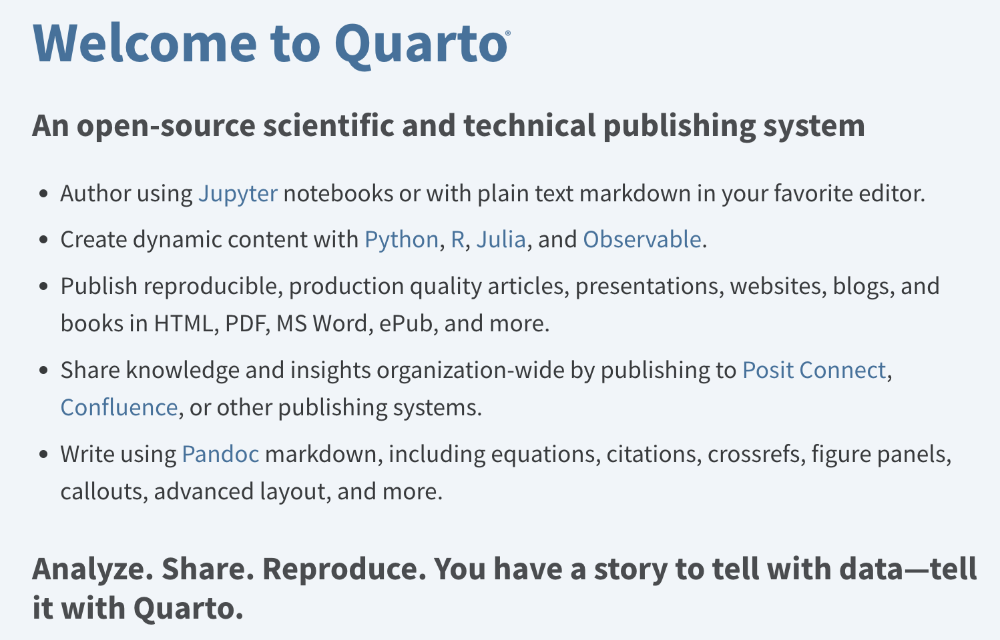

# testing the pipeline
from Fractal_LLM_Course.lesson_2.simple_pipeline import SentimentPipeline
# loading the default Sentiment Analysis model
model_name = 'distilbert-base-uncased-finetuned-sst-2-english'
classifier = SentimentPipeline(model_name)
# make sure that the official HuggingFace example works as expected
results = classifier("We are very happy to show you the 🤗 Transformers library."); results
assert results['label'] == 'POSITIVE'nbdev for Blogging and Building Python Libraries
fractal
python
nbdev
Goals:
This notebook has two goals:
- Create a blog and publish a post.
- Build a small, dynamic python library for a HuggingFace Sentiment Analysis pipeline.
Intro:
We use the nbdev library for both tasks. nbdev is a powerful tool inspired by two main ideas:
- Literate Programming.
- Exploratory Programming.
The next section briefly covers these ideas and why their combination is so powerful.
Literate Programming
In Literate Programming, text descriptions are woven directly into a project’s source code. This is different from most codebases where documentation exists in a separate set of files.
Code, tests, and documentation are all first-class citizens in Literate Programming. For example in nbdev a Notebook is the unified source of all three things. Instead of having to independently manage code, docs, and tests, everything happens in the Notebook. If the Notebook runs then you know your code will run.
This tight loop between what you’re doing (the code), describing what you’re doing (the documentation), and making sure it’s correct (tests) is a great approach for both research and thinking in general.
Exploratory Programming
Exploratory Programming is an open-ended approach for tackling new problems and unknown domains. It’s very helpful at the start of a project while its scope or requirements are being finalized.
The dynamic, interactive nature of Notebooks is ideal for Exploratory Programming. It makes the barrier to try new things extremely low. And it’s fun! Jupyter also has many more advanced tools to inspect code and debug its outputs.
Combining Literate and Exploratory Programming
nbdev’s main workflow combines these two ideas. It’s a great approach for trying things out, figuring out what they do, and how they work. We can poke around and explore codebases in a much more interactive way than usual. Iterations are fast and cheap so it’s easy to follow any hit of curiosity. And if anything breaks, we can always restart the Notebook and try again.
These ideas can be mix and matched on the fly. For example at the start of a project, while figuring out the problem space, we might lean Exploratory. Then, as the idea matures, we pivot more Literate to refine and crystallize our approach.
Now for the first goal: creating and publishing a blog post.
Turning Notebooks into Blog Posts
First, a high-level summary of how the blog will be created and published with nbdev
High-Level Steps:
- Create a new
nbdevproject.
- Set it up to be a publishable blog.
- Build and publish the blog to Github pages.
nbdev leverages a tool called Quarto for blogging. Quarto is a publishing framework tailored for scientific and technical articles and posts. In a way it’s a blogging platform for Literate Programming, where a series of code commands tells a story that takes its reader on a journey.

Creating a new nbdev project
nbdev works on top of a Git repo, so the first step is creating a new, empty repository. There is a handy Github link that takes us straight to the page for creating new repos.
Note: We need a completely empty repo. Don’t include a
.gitignoreorREADME.md.
In this example the empty repo is called sample_blog, but feel free to call it anything you’d like. We’re not tied to this name either. We can always create new repos with different, better names.
Clone the empty new repo to your computer. Make sure to change the github link below so it points to your repo instead.
# clone the repo to your computer
git clone https://github.com/enzokro/sample_blog.git # <-- ! link with your repo hereNow we can go into this repo and let nbdev work its initialization magic. Run the nbdev_new command to start. It will prompt you for some general info like a short description about the project.
# move into the new repo and initialize the nbdev project
cd sample_blog/
nbdev_newAll of the options and configs for the project are in the settings.ini file. nbdev looks in this file when it needs any information for its commands.
After nbdev_new finishes, you will have a brand new nbdev project!
Run a git status command to see everything that was added. Then we commit and push these changes to Github.
# add, commit, and push the files created by nbdev
git add .
git commit -m'Initial nbdev project creation'
git pushAs we mentioned earlier, nbdev leverages Quarto for publishing Notebooks. Let’s take a look at how to turn this project into a proper Quarto blog.
Adding Quarto to the Mix
Start by activating the virtual environment:
# activate the environment
mamba activate llm_baseInstall Quarto via nbdev by running the nbdev_install_quarto command. Note that the command will ask for admin privileges.
# install quarto
nbdev_install_quartoYou may need to refresh the terminal before it can find the quarto commands. To be safe, open up a new terminal and re-activate the environment. Now the command below will check if Quarto was installed right.
# shows us where quarto was installed
which quarto Turning an nbdev project into a Quarto blog
In a typical nbdev project the Notebooks all live inside of the nbs/ folder. These are the Notebooks that eventually become a project’s documentation, tests, and source code.
For Quarto to instead publish Notebooks as blog posts, we need to add a few files and folders to the nbs/ folder.
Here is how a nbs/ folder primed for its first blog post will look:
Initial Structure for Quarto Blog:
sample_blog
└───nbs/
│ │ _quarto.yml
│ │ index.ipynb
│ └───blog/
│ │ index.qmd
│ └───posts/
│ └───2023-09-27-Blog-Intro/
│ │ index.ipynbThe main change we are making is adding a blog/ folder inside of the nbs/ directory. Inside we place an index.qmd file at the top-level that tells Quarto about our blog. For example, here’s an index.qmd file that describes our blog and how its posts should be listed:
---
title: Example Blog
subtitle: Publishing with Quarto and nbdev
listing:
sort: "date desc"
contents: "posts"
sort-ui: false
filter-ui: false
categories: true
feed: true
page-layout: full
---Each post gets its own folder so we can stay better organized. Inside each folder is an index.ipynb Notebook with the post’s actual content. We can also add photos, videos, and any other media that enhances the post to the folder.
In this case, we are going a bit meta and using this Notebook itself as index.ipynb in the folder called 2023-09-27-Blog-Intro/.
In other words this Notebook will also be our first blog post.
Hosting the Blog on Github Pages
Next, we will build and host our site on Github’s Pages platform for free. The screenshot below shows the settings we need for the repo to be published as a blog.

Specifically, we need to set Deploy from a branch under the Build and deployment section, and pick the gh-pages branch. gh-pages is a special branch where Quarto parses our Notebooks into a proper website.
Now we can run the quarto publish command to build and publish the blog.
# publish the blog on github pages
quarto publishAnd there we go! Click here for a live link to this Notebook as a blog post. The first task is now complete. On to the next one.
Creating python libraries with nbdev
Next we will build a small, dynamic python library. The library itself is a thin wrapper around a HuggingFace Sentiment Analysis pipeline.
nbdev exports Notebooks into complete python libraries by parsing the code cells and extracting what it needs.
We can tell it how to process a code cell using Quarto directives that go at the start of a cell. Directives start with the special string #|, which is similar to the shebang string #! you may have seen in other scripts.
For example, the default_exp directive is used to name the output python file. Here we use it to name this specific python file as lesson_2/simple_pipeline.py:
#| default_exp lesson_2.simple_pipelineNow that we’ve named our soon-to-be python file we can implement the actual pipeline. An export directive in a code cell tells nbdev that we want the code inside to be part of the python file.
Note: Quarto removes directive while parsing the Notebook, which is why it doesn’t show up in the cell below. You can find the directives in the code cells of the [original Notebook].
::: {.cell 0=‘e’ 1=‘x’ 2=‘p’ 3=‘o’ 4=‘r’ 5=‘t’ execution_count=2}
# imports the pieces for the pipeline
from transformers import AutoConfig
from transformers import AutoTokenizer
from transformers import AutoModelForSequenceClassification:::
Next, we refactor the code from the previous notebook (01_first_runs.ipynb) into a simple class.
::: {.cell 0=‘e’ 1=‘x’ 2=‘p’ 3=‘o’ 4=‘r’ 5=‘t’ execution_count=3}
class SentimentPipeline:
def __init__(self, model_name):
"""
Sentiment Analysis pipeline.
"""
self.model_name = model_name
self.config = AutoConfig.from_pretrained(self.model_name)
self.tokenizer = AutoTokenizer.from_pretrained(self.model_name)
self.model = AutoModelForSequenceClassification.from_pretrained(self.model_name)
def preprocess(self, text: str):
"""
Sends `text` through the LLM's tokenizer.
The tokenizer turns words and characters into special inputs for the LLM.
"""
tokenized_inputs = self.tokenizer(text, return_tensors='pt')
return tokenized_inputs
def forward(self, text: str):
"""
First we preprocess the `text` into tokens.
Then we send the `token_inputs` to the model.
"""
token_inputs = self.preprocess(text)
outputs = self.model(**token_inputs)
return outputs
def process_outputs(self, outs):
"""
Here we mimic the post-processing that HuggingFace automatically does in its `pipeline`.
"""
# grab the raw scores from the model for Positive and Negative labels
logits = outs.logits
# find the strongest label score, aka the model's decision
pred_idx = logits.argmax(1).item()
# use the `config` object to find the actual class label
pred_label = self.config.id2label[pred_idx]
# calculate the human-readable probability score for this class
pred_score = logits.softmax(-1)[:, pred_idx].item()
# return the predicted label and its score
return {
'label': pred_label,
'score': pred_score,
}
def __call__(self, text: str):
"""
Overriding the call method to easily and intuitively call the pipeline.
"""
model_outs = self.forward(text)
preds = self.process_outputs(model_outs)
return preds
def __repr__(self):
"""
Cleaner representation of the pipeline.
"""
return f"SentimentAnalysis_{self.model_name}":::
Let’s make sure that SentimentPipeline actually works, since live tests are one of the main benefits of Notebook coding! And since we don’t put an export directive in the cell below, it does not end up inside the exported python file either.
nbdev runs this notebook when it compiles the library, and if the tests fail then the build fails. So you can think of the code cell above as a unit test for the SentimentAnalysis pipeline. Writing tests like this alongside the source code is a great, built-in way of making sure that the library is always working.
Exporting the library
We can now export the Notebooks using the nbdev_export command. This command will create a file inside the top-level library folder Fractal_LLM_Course/. Per the default_exp directive, the file is nested in a folder, and its full path is lesson_2/simple_pipeline.py.
Make sure to run the following code from the top-level of the repo.
# export Notebooks into python files
nbdev_export This library can now be installed with pip, just like with any other python library.
# install the library as an editable install
pip install -e . Below is an example of using the SentimentPipeline class in this library, after installation.
# import the newly installed library
from Fractal_LLM_Course.lesson_2.simple_pipeline import SentimentPipeline
# use our custom SentimentAnalysis pipeline!
model_name = 'distilbert-base-uncased-finetuned-sst-2-english'
classifier = SentimentPipeline(model_name) Congrats! We’ve now built and installed a full, working python library. This is just the start, nbdev has many other advanced tools you can read about here. This completes the second goal of this Notebook.
Conclusion
This Notebook covered two key features of nbdev:
- Creating a blog.
- Building python libraries.
We also showed how the mixture of Literate and Exploratory Programming is a powerful approach for both research and thinking in general. And we showed how nbdev helps us quickly try out new ideas and easily share them with others.